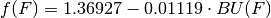

Reactor Parameters¶
The reactor classes have a couple of helper classes that allow them to function in a more intuitive manner. The ReactorParamters class specifies required data for the reactor model to run. The use of this class prevents the initialization methods from having 15+ arguments. Instead this class is passed to the constructor and related methods.
All functionality may be found in the reactor_parameters module:
import bright.reactor_parameters
Reactor Parameters Class¶
- class bright.reactor_parameters.ReactorParameters¶
This data structure is a set of physical reactor parameters. It may be used to instantiate new reactor objects OR to define default settings for a reactor type. The data stored in this class is copied over to a reactor instance in the initialize() method. However, the attributes of this objects take on more natural names than their reactor attribute analogies. This is because it is this object that Bright users will more often be interacting with.
- batches¶
This is the total number of batches (int) in the fuel management scheme. This is typically indexed by b.
- flux¶
The nominal flux value (float) that the library for this reactor type was generated with. Often used to correctly weight batch-specific fluxes.
- fuel_form¶
This is the chemical form of fuel as a dictionary or other mapping. Keys are often strings that represent isotopes while values represent the corresponding mass weights. The heavy metal concentration by the key “IHM”. This will automatically fill in the nuclides in mat_feed for the “IHM” weight. For example, LWRs typically use a UOX fuel form:
ReactorParameters.fuel_form = {"IHM": 1.0, "O16": 2.0}
- cladding_form¶
This is the chemical form of cladding as a dictionary or other mapping. This uses the same notation as fuel_form except that “IHM” is no longer a valid key. Cladding is often made from some zircalloy.
- coolant_form¶
This is the chemical form of coolant as a dictionary or other mapping. This uses the same notation as fuel_form except that “IHM” is no longer a valid key. The term ‘coolant’ is used in preference over the term ‘moderator’ because not all reactors moderate neutrons. For example, LWRs often cool the reactor core with borated water:
ReactorParamters.coolant_form = {} ReactorParamters.coolant_form["H1"] = 2.0 ReactorParamters.coolant_form["O16"] = 1.0 ReactorParamters.coolant_form["B10"] = 0.199 * 550 * 10.0**-6 ReactorParamters.coolant_form["B11"] = 0.801 * 550 * 10.0**-6
- fuel_density¶
The fuel region density. A float in units of [g/cm^3].
- cladding_density¶
The cladding region density. A float in units of [g/cm^3].
- coolant_density¶
The coolant region density. A float in units of [g/cm^3].
- pnl¶
The reactor’s non-leakage probability (float). This is often used as a calibration parameter.
- BUt¶
The reactor’s target discharge burnup (float). This is given in units of [MWd/kgIHM]. Often the actual discharge burnup BUd does not quite hit this value, but comes acceptably close.
- specific_power¶
The specific power of the fuel (float) in units of [MW/kgIHM]
- burn_regions¶
Number of annular burn regions (int).
- burn_times¶
A non-negative, monotonically increasing numpy float array (C++ vector<double>) of burnup times [days].
- use_disadvantage_factor¶
Boolaean to determine whether the thermal disadvantage factor is employed or not. LWRs typically set this as True while FRs have a False value.
- lattice_type¶
Flag (str) that represents what lattice type the fuel assemblies are arranged in. Currently accepted values are “Planar”, “Spherical”, and “Cylindrical”.
- rescale_hydrogen¶
Boolean to determine whether the reactor should rescale the Hydrogen-1 destruction rate in the coolant as a function of fluence. The scaling factor is calculated via the following equation

This is typically not done for fast reactors but is a useful correction for LWRs.
- fuel_radius¶
The radius (float) of the fuel region [cm].
- void_radius¶
The radius (float) of the void region [cm].
- clad_radius¶
The radius (float) of the cladding region [cm].
- unit_cell_pitch¶
The pitch or length (float) of the unit fuel pin cell [cm].
- open_slots¶
The number of slots (float) in a fuel assembly that are open. Thus this is the number of slots that do not contain a fuel pin and are instead filled in by coolant.
- total_slots¶
The total number of fuel pin slots (float) in a fuel assembly. For a 17x17 bundle this is 289.0.
Reactor Parameter Defaults¶
- bright.reactor_parameters.lwr_defaults()¶
This function returns a copy of the LWR default presets. These are applicable to most cases. However, if you want to use your own LWR parameters, it is recommended you use this function and then only change the necessary attributes.
Returns : lwrd : ReactorParameters
Light water reactor default parameters.
Warning
Note that the target burnup default value is zero. Generally, at least this value should be overridden.
- bright.reactor_parameters.fr_defaults()¶
This function returns a copy of the FR default presets. These are applicable to most cases. However, if you want to use your own FR parameters, it is recommended you use this function and then only change the necessary attributes.
Returns : frd : ReactorParameters
Fast reactor default parameters.
Warning
Note that the target burnup default value is zero. Generally, at least this value should be overridden.